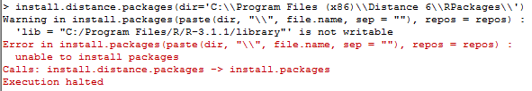
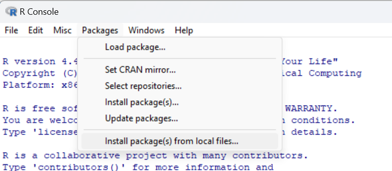
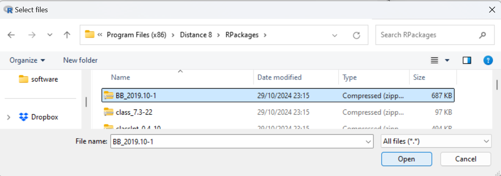
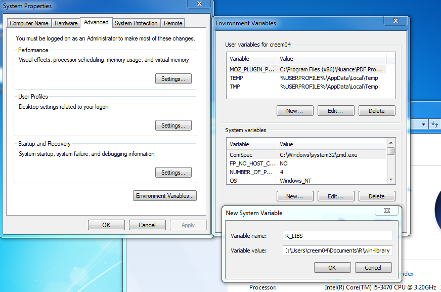
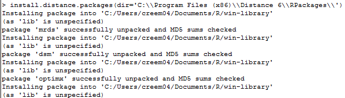

Distance 8.0 and R
Installation of R for use with Distance 8.0 Release 1
Note these issues occur with earlier versions of Distance too.
Distance makes use of R for analysis engines MRDS, DSM, MA and the simulation engine. You will need to have R installed on your computer to perform analyses with those engines. There are several possible ways in which your installation of R might be incompatible with Distance. This page highlights those challenges and helps you to overcome them.
Distance must ensure these R packages are installed on your system. The packages are shipped with Distance 8.0 and when you attempt to run an MRDS, DSM or MA analysis, or a simulation, Distance checks whether the requisite packages exist, and if not, installs them for you. Distance has certain expectations regarding how to find your installation of R. If those expectations are not met, you will receive various Distance error messages. Below is a guide to the messages, their meaning and remedy.
Directory not writeable error

You may find the R packages needed cannot be installed by Distance. This is the result of security measures put in place by Windows 7 (and later) operating system(s). It is common to make the R library directory in the dreaded C:Files location. Windows 7 (and later) has strong opinions about software writing into that location. The translation of the error message above is : I cannot write the R packages into the usual location because of Windows security concerns.
Solution:
A simple solution to this issue is to open the R software and choose the option to install a package from a local file from the Packages menu. You can then direct R to one of the R packages within the Distance 8 installation directory. You only need to do this for one package after a new installation of R as you will be asked to select a folder in which to store R packages that will then be used by default for all subsequent R package installations. See the images below for further details of how to do this:


Alternatively, in a more complex solution you can set the location of the directory where the R packages are stored directly. A common safe location is C:<user>Documents-library See the discussion in the R for Windows FAQ.
The R for Windows FAQ discusses creating an environment variable that points to the location where your R packages will be stored. That requires administrator rights to be able to open the Windows Control Panel, go to Security, System, Advanced Settings. Follow the screen shot shown below.

Following either set of steps above, you can then start Distance again. Attempt to run an MRDS analysis (e.g. the Golftees.dst project shipped with Distance). If all goes as planned, your Log window should produce the following positive messages.
